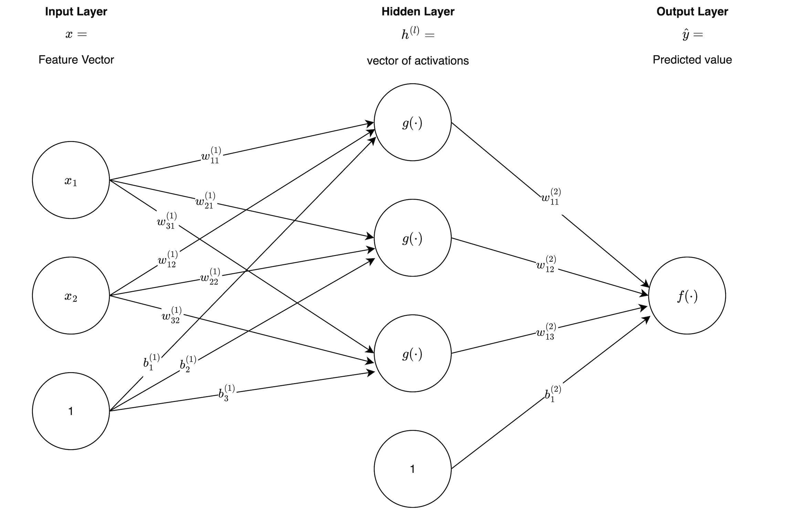
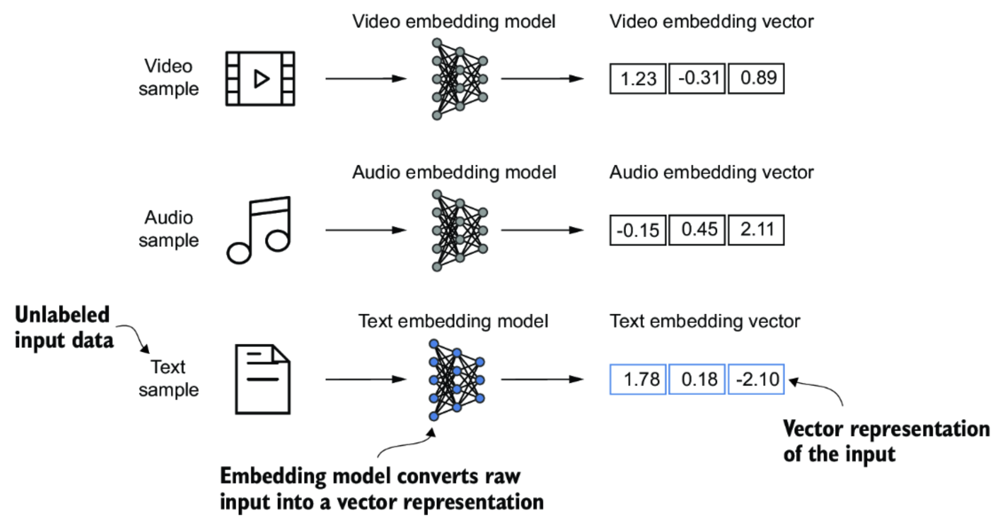
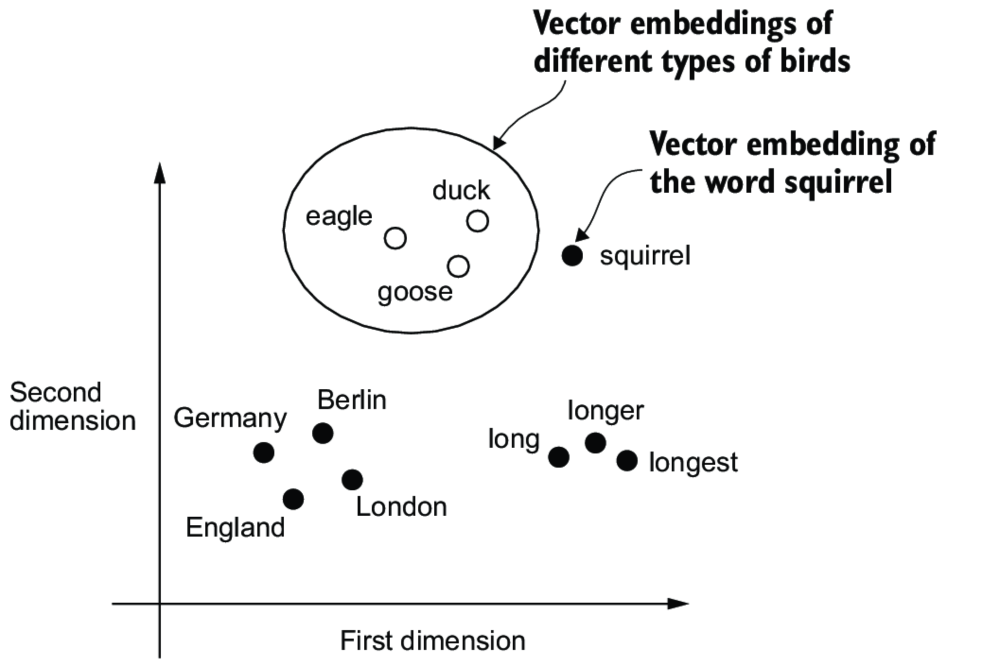
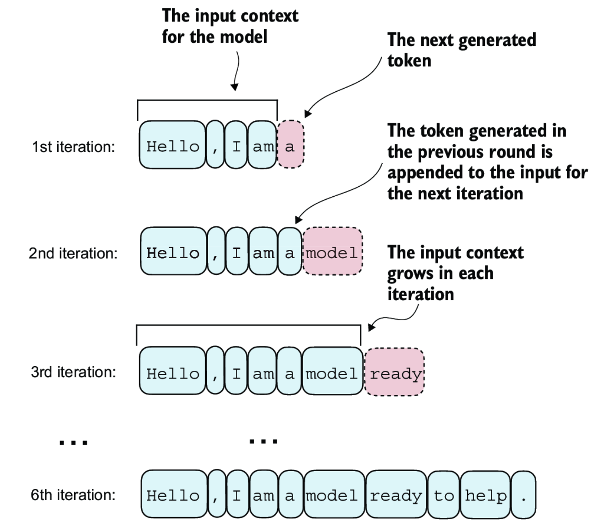
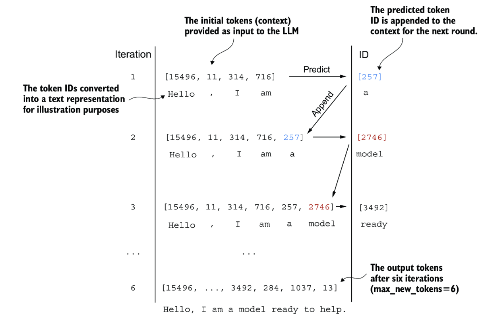
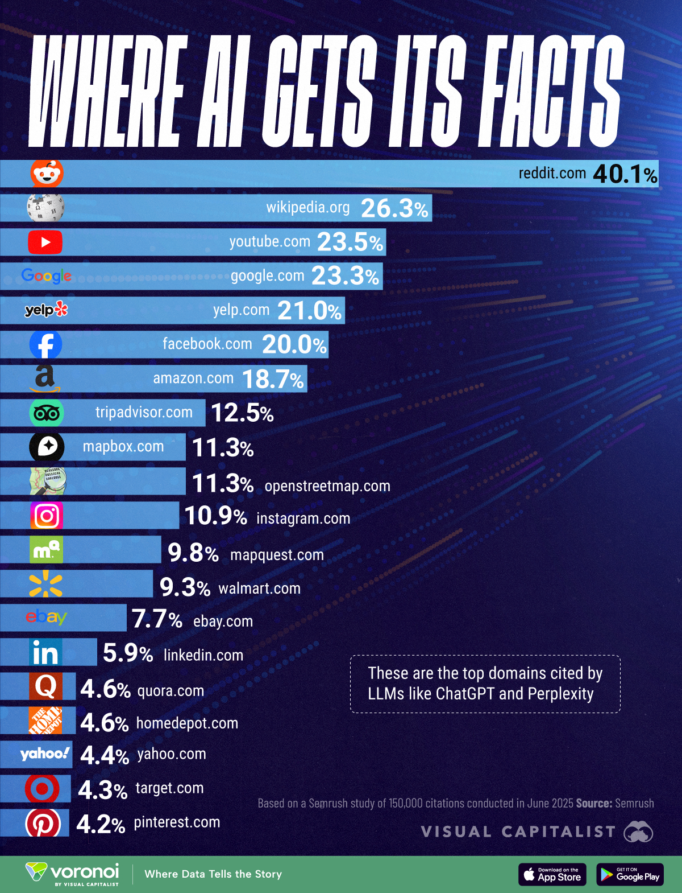
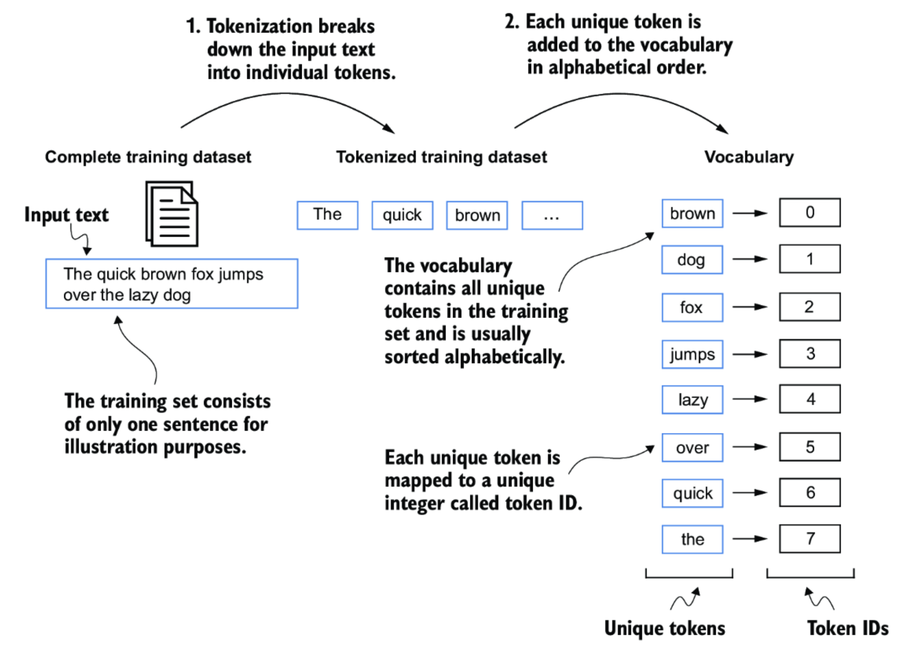
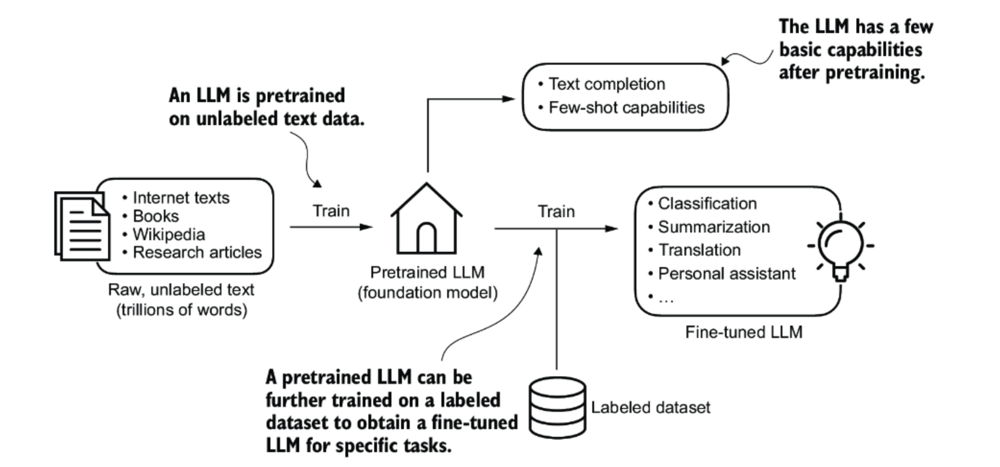
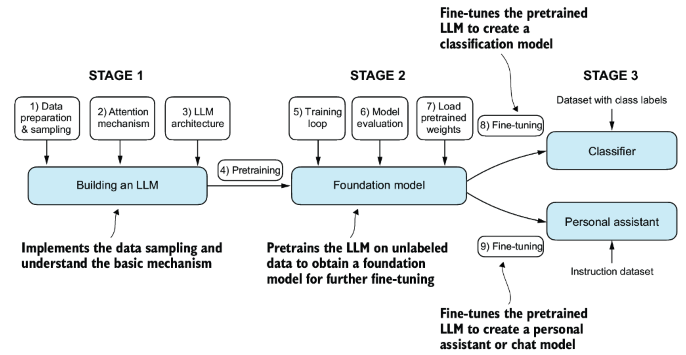
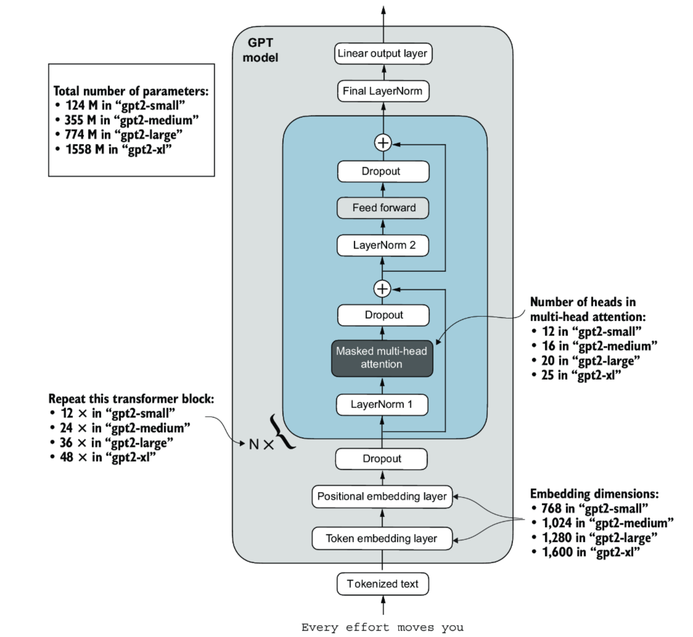

import os
import time
import pandas as pd
from openai import OpenAI
# --- Config ---
INPUT_CSV = "input.csv"
OUTPUT_CSV = "output.csv"
MODEL = "gpt-4o-mini"
SYSTEM_PROMPT = "You are a helpful assistant."
API_KEY = os.getenv("OPENAI_API_KEY", "YOUR_OPENAI_API_KEY") # or set env var
# --- Client ---
client = OpenAI(api_key=API_KEY)
# --- Load data ---
df = pd.read_csv(INPUT_CSV)
# Ensure expected columns exist
for col in ["name", "topic", "tone"]:
if col not in df.columns:
raise ValueError(f"Missing required column: {col}")
def call_api(row, retries=3, backoff=2.0):
"""Call OpenAI once per row with simple retry/backoff."""
prompt = f"Write a {row['tone']} introduction to {row['topic']} for someone named {row['name']}."
for attempt in range(retries):
try:
resp = client.chat.completions.create(
model=MODEL,
messages=[
{"role": "system", "content": SYSTEM_PROMPT},
{"role": "user", "content": prompt},
],
temperature=0.7,
)
# Newer client returns attributes, not dicts:
return resp.choices[0].message.content.strip()
except Exception as e:
if attempt == retries - 1:
return f"Error: {e}"
time.sleep(backoff ** attempt)
# --- Run generation ---
df["response"] = df.apply(call_api, axis=1)
# --- Save results ---
df.to_csv(OUTPUT_CSV, index=False)
print(f"Done. Wrote {len(df)} rows to {OUTPUT_CSV}")LLMs & Prompting
AI and Machine Learning
To get the most out of AI and in particular if you plan to build AI powered products (which is different than simply building a product with the help of AI), you need to understand how this technology works, at least at a high level. Artificial Intelligence (AI) is the broad idea of creating computer systems that can perform tasks we normally associate with human intelligence, like understanding language, recognizing patterns, making decisions, and generating creative content.
Machine Learning (ML) is a subset of AI that focuses on teaching computers to learn from data instead of following hard-coded instructions. In ML, we give the computer many examples (data) and let it find the patterns on its own. The more and better-quality data it sees, the better it gets at making predictions or generating useful outputs.
Within machine learning, deep learning uses layers of artificial “neurons”, called a neural network, to handle extremely complex patterns this is the technology behind most modern breakthroughs, including Large Language Models (LLMs) like ChatGPT.
Even if you won’t be building AI models, understanding the basics concepts of how they are developed will help you ask the right questions, spot opportunities for AI in products, and work effectively with technical teams.

Supervised Learning
The branch of machine learning that powers today’s Generative AI breakthroughs is supervised learning. The term “supervised” refers to the fact that the mathematical model is guided by correct answers from a ground-truth dataset (actual data from the real world), allowing it to learn the mapping from inputs to outputs. These correct answers are often referred to as the labels in a labeled data set. An example is training a model to guess the next word in a sentence by giving it lots of past examples of actual sentences.
For instance, imagine we train a model on sentences like:
- The cat sat on the mat.
- She went to the store.
- I like to eat pizza.
In each case, the words before the bolded one can be considered the input, and the bolded final word is the label (correct answer or ground-truth). After using many examples to train a model, we can apply the model to new sentences to infer the best next word given any text input.
In short: supervised learning is learning patterns from labeled examples so you can make accurate predictions on new, unseen data.
The simplest form of supervised learning is simple linear regression, where the goal is to predict a straight line (linear) relationship between an output variable one or more input variables.
A simple linear regression model takes a single input variable \(x\) and predicts the value of a corresponding output variable \(y\). For example, the input variable might represent a house’s square footage, and the output variable could represent the value of the home.
We can write down the relationship between square footage and value in the form of a mathematical equation (also called a mathematical function or a model):
\[ \hat{y} = w_0 + w_1 x \]
Where \(\hat{y}\) (pronounced y-hat)represents the predicted home value and \(x\) represents the square footage.
In machine learning jargon \(w_0\) and \(w_1\) are called the parameters or weights of the model (hence the use of \(w\) in the notation) and describe the nature of the relationship between \(x\) and \(\hat{y}\). \(w_0\) and \(w_1\) are the numbers that the computer will learn (i.e. derive) based on what is observed in real life which will be represented in a training dataset that consists of many input–output pairs.
The straight line in the image below helps you visualize the estimated linear relationship that can be learned between an output and an input such as square-footage. The dotted lines connecting the individual data points to the fitted red line show how far off the model predictions are from ground truth. The process of training a model tries out different values for the paramaters as it searches for the ones that will minimize the prediction errors. The way you compute the prediction error is called the “loss function” (in this case, the loss function could be defined as: \(|predicted - actual|\)). The name for this iterative algorithm that looks for the best possible weights is called gradient descent.
What is gradient descent?
Gradient descent is a family of machine learning algorithms that update a model’s parameters (weights) so that they can make better predictions over time. The word “gradient” refers to multivariate version of a derivative (rate of change) from calculus. The rate of change in this context is how quickly the prediction error changes when you change model parameters.
An analogy will help with the intuition. Imagine the height of a hillside represents the sum of all the prediction errors. The point where you are standing on the hillside represents the current model parameters (weights). The goal is to get down the hill onto the valley floor (which implies reducing the prediction error) as fast as possible by taking the steepest path down. Each step down corresponds to a testing out a different set of model parameters to see how accurate the model predictions become. The gradient (i.e. the rate of change in the prediction error as the model parameters are adjusted) is computed and tells you which direction is steepest. You take another step (i.e. smartly choose new values for the parameters) and keep repeating this process until you are confident you’ve found the model paramaters that minimize the prediction error.

While linear regression is useful for modeling straight-line relationships between inputs and outputs, we need something much more flexible to capture the complexity of human language. Neural networks provide such a tool. First inspired in the 1940s as mathematical models of the brain, they languished for decades but are now realizing their full potential, with large datasets and powerful hardware enabling complex networks to excel in vision and language applications.
Neural Networks
Like linear regression, a neural network is fundamentally a mathematical function that defines a relationship between inputs and outputs. A deep understanding of neural networks is beyond the scope of this course, but we will at least introduce a visual and show the mathematical function to give you some sense for what’s going on under the hood.
A simple neural network can be written as:
\[ \hat{y} = f\!\big(W^{(2)}\, g(W^{(1)} x + b^{(1)}) + b^{(2)}\big) \] Where:
- \(W\)s are matrices containing the model weights (parameters)
- \(x\) is now a vector of inputs (1 or many inputs),
- \(b\)s are analogous to intercept terms (called “bias”)
- \(f(\cdot)\) and \(g(\cdot)\) are referred to as activation functions
As you can see in the above equation, a neural network is a composite a several functions. For larger neuron networks many functions are nested.
Neural networks are often described in visual terms like in the image below:

A neural network is organized into layers that gradually transform inputs into a prediction. The first layer, called the input layer, represents the features we provide to the model. In the home value example, the inputs might be the square footage of the home and the number of bedrooms. A bias input fixed at 1 is also included, giving the network more flexibility to shift its predictions up or down regardless of the raw feature values. Each circle in the diagram is called a neuron or unit, and the lines connecting them are referred to as edges. Each edge represents a weight or bias parameter that the model learns during training. These inputs are passed into the hidden layer, where each neuron acts like a mini regression equation of its own. Each neuron computes a weighted sum of the inputs, adds its bias, and then applies a function we call \(g\). This is known as an activation function, and its role is to bend straight-line relationships into curves so the network can capture more complex patterns. For instance, in our housing example, \(g\) might allow the model to learn that the first 500 square feet add a lot of value, while additional square footage adds less. Without this step, the network would behave just like plain linear regression.
Finally, the hidden layer feeds into the output layer. Here, the activations are combined again using new weights and a bias, and then passed through another function, usually called \(f\). You can think of \(f\) as the final shaping step that ensures the prediction is in the right form for the task. For predicting home prices, \(f\) might simply output a dollar amount. For classification problems, \(f\) might produce a probability between 0 and 1.
Whereas simple linear regression has just two parameters to estimate (a slope and an intercept), the small neural network in the diagram already has 13 parameters. The number of parameters grows quickly as networks get larger, which is what gives them the ability to represent more complex relationships. Modern neural networks that power chatbots such as ChatGPT are astonishingly large by comparison, containing hundreds of billions of parameters. GPT-3, for example, was trained with 175 billion parameters, and the newest generations are even larger. This massive scale enables them to capture subtle patterns in language, context, and reasoning, allowing them to generate coherent, human-like responses.
Of course, this complexity comes with trade-offs: training such large models requires enormous amounts of data, specialized hardware such as GPUs and TPUs, and advanced optimization techniques. But the underlying principle is the same as in the small housing example above where each parameter represents a weight or bias that adjusts how inputs are transformed into outputs. The difference is simply one of scale.
You won’t need to fully understand or know the math behind neural networks for this course, but you should at least see it once which many people never do. The neural network shown in the visualization above is written mathematically in the steps that follow:
All of the weights associated with the edges are combined into a weight matrix and bias vector. The weight associated with the transition from the input layer the hidden layer is shown first followed by the weights and bias that transform the hidden layer into the final output.
\[ W^{(1)} \in \mathbb{R}^{3 \times 2} = \begin{bmatrix} w^{(1)}_{11} & w^{(1)}_{12} \\ w^{(1)}_{21} & w^{(1)}_{22} \\ w^{(1)}_{31} & w^{(1)}_{32} \end{bmatrix}, \quad b^{(1)} \in \mathbb{R}^{3} \;=\; \begin{bmatrix} b^{(1)}_{1} \\ b^{(1)}_{2} \\ b^{(1)}_{3} \end{bmatrix} \]
\[ W^{(2)} \in \mathbb{R}^{1 \times 3} = \begin{bmatrix} w^{(2)}_{11} & w^{(2)}_{12} & w^{(2)}_{13} \end{bmatrix}, \quad b^{(2)} \in \mathbb{R} \;=\; \begin{bmatrix} b^{(2)}_{1} \end{bmatrix} \] These can be plugged into the matrix equation that we first showed.
\[ \hat{y} \;=\; f\!\Big(W^{(2)}\, g\!\big(W^{(1)} x + b^{(1)}\big) + b^{(2)}\Big) \] After doing the matrix computations, the formula would expand into this long set of additions and multiplications.
\[ \hat{y} = f\!\Big( w^{(2)}_{11}\, g\!\big(w^{(1)}_{11} x_1 + w^{(1)}_{12} x_2 + b^{(1)}_1\big) + w^{(2)}_{12}\, g\!\big(w^{(1)}_{21} x_1 + w^{(1)}_{22} x_2 + b^{(1)}_2\big) + w^{(2)}_{13}\, g\!\big(w^{(1)}_{31} x_1 + w^{(1)}_{32} x_2 + b^{(1)}_3\big) + b^{(2)}_{1} \Big) \] Common choices of function for \(f\) and \(g\) are shown below:
\[ f(z) = \sigma(z) = \frac{1}{1 + e^{-z}} \]
\[ \quad g(z) = \text{ReLU (Rectified Linear Unit)} = \max(0, z) \] Modern AI models take text and break it into smaller pieces called tokens. A token might be a whole word, part of a word, or even a single character. Each token is then converted into numbers through a process called embedding, which represents it as a vector of numbers that captures aspects of its meaning and how it relates to other tokens.
Embeddings are a way to turn different kinds of information like text, audio, or video—into numbers so a computer can work with them.
An embedding model is itself a deep neural network that takes raw input (words, sounds, images, etc.) and converts it into a list of numbers that captures the meaning or important features of the input (i.e. a vector). Two inputs with similar meanings will have vectors that are close to each other, even if the exact words, sounds, or images are different.
Embeddings are like coordinates on a map of word meanings. They let computers compare, search, and work with language in a numerical and mathematical way.


The model typically takes a sequence of token embeddings, for example, a batch representing 10 or so words, as input and is trained to predict the next word in the sequence. During training, it learns from vast collections of text such as books, articles, blogs, and other digital sources, which serve as the ground truth.
Once the text has been converted into numbers, the neural network processes these vectors layer by layer, using weights, biases, and activation functions to detect patterns and relationships. With each layer, the model refines its understanding of the context, and at the end of the process, it produces a probability distribution over possible next words and selects the most likely one.


Image source: Build a Large Language Model (From Scratch) by Sebastian Raschka

To summarize our discussion, modern AI models are ultimately created from 4 foundational ingredients:
- A mathematical model: This defines the form of the mathematical relationship used to relate inputs to outputs, for example, a straight line (linear) or a more flexible structure like a neural network (non-linear).
- Training data: A collection of real-world examples that pair inputs with their corresponding outputs. The quality and relevance of this data are crucial to how well the model can learn and make accurate predictions. In the case of LLMs, the training data is a gigantic corpus of text (i.e. books, blogs, etc.)
- A “loss” function: A mathematical expression that measures how far off the model’s predictions are from the correct answers found in the train data. The loss function provides feedback on prediction accuracy and helps the model improve over time.
- A training algorithm: A step-by-step procedure that combines the first three ingredients in a way that minimizes the prediction errors produced by the model. This is where the so-called learning takes place. Modern AI models are trained using algorithms based on gradient descent.
Large Language Models and Generative AI
Large Language Models (LLMs) are built using massive neural networks and are the core technology behind much of today’s Generative AI. They are built in two main stages: pretraining and fine-tuning
1. Gathering and Processing Text Data
The process begins by collecting an enormous body of text from a variety of sources, including internet articles, books, Wikipedia, and research papers. This raw text can contain trillions of words. Before a model can use it, the text is converted into numbers through a process called tokenization. Each word or piece of a word is represented as a vector (a list of numbers) so the computer can process it mathematically.

2. Pretraining the Model
Using this massive numerical dataset, the model is trained to perform one fundamental task: predicting the next word in a sequence. By doing this billions of times, it learns grammar, facts about the world, reasoning patterns, and relationships between concepts. After pretraining, the LLM becomes a foundation model with basic capabilities such as:
- Text completion – finishing a sentence or paragraph.
- Few-shot learning – adapting to new tasks with just a few examples in the prompt.
3. Fine-Tuning for Specific Tasks
Pretraining gives the model broad language skills, but it’s still general-purpose. Fine-tuning makes it specialized. In this stage, the pretrained model is trained again on a labeled dataset—data where each input has a known, correct output. This allows the LLM to excel at targeted applications such as:
- Classification – sorting emails as spam or not spam.
- Summarization – condensing long documents into key points.
- Translation – converting text between languages.
- Conversational assistance – answering questions and performing tasks as a chatbot or virtual assistant.
4. The Big Picture
- Pretraining = learning the general rules of language and knowledge.
- Fine-tuning = specializing for specific, high-performance applications.
Together, these steps create powerful AI systems capable of generating text, answering questions, and performing a wide variety of language-based tasks.


GPT Architecture
Digging into the full details of the GPT architecture is beyond the scope of this course. However, it’s useful to recognize diagrams like this, which present the high-level structure of the model. At the bottom, tokenized text (converted into numerical tokens) passes through an embedding layer that maps each token to a numerical vector. A positional embedding layer adds information about word order.
The heart of GPT is the transformer block (shaded in blue), repeated many times (e.g., 12 layers for GPT-2 Small, 48 for GPT-2 XL). Each block contains:
- Masked multi-head attention – allows the model to focus on relevant words in the input while preventing it from “seeing” future words during training.
- Feed-forward layers – process and transform the attention outputs.
- Layer normalization and dropout – improve stability and reduce overfitting.
Each layer in the GPT architecture is part of a deep neural network and performs a sequence of mathematical operations—primarily matrix multiplications and additions—that transform the input vectors into increasingly abstract representations of the text. During training, the model’s parameters (weights) are adjusted using gradient descent, an optimization process that reduces prediction errors by calculating how much each weight should change based on the difference between the model’s output and the correct answer.
After going through all the layers, the model tidies up its final internal calculations and then turns them into a list of possible next words, each with a score for how likely it is to come next. The word with the highest score is usually chosen as the model’s prediction.

Prompting
Now that we understand a bit about what powers modern AI, let’s get practical and discuss prompting techinques to get the most out of it.
Prompts come in many shapes, depending on your goals, the complexity of the task, and how much control you need over the AI’s output. Understanding the anatomy of different prompt structures helps you choose the right one for the job.
| Prompt Type | What it is | Example | Best for |
|---|---|---|---|
| Single-Turn Prompt | A one-off instruction or question sent to the model. | Summarize this article in three bullet points. | Quick tasks where context isn’t needed beyond the immediate request. |
| Role-Based Prompt | Sets a clear role or persona for the AI to adopt. | You are an experienced product manager. Draft a launch plan for a new mobile app. | When tone, perspective, or expertise level matters. |
| Context + Instruction Prompt | Combines background information with a direct request. | Background: Our company sells eco-friendly cleaning products online. Task: Write a short ad targeting parents concerned about chemical safety. | When the model needs background to produce relevant results. |
| Few-Shot Prompt | Includes examples of desired input-output pairs to guide the model’s style or format. | Q: What is the capital of France? A: Paris Q: What is the capital of Germany? A: Berlin Q: What is the capital of Italy? A: |
Training the model in your preferred style or pattern without fine-tuning. |
| Multi-Turn Conversation | A back-and-forth exchange where previous messages build context. | User: Give me a list of U.S. national parks in the West. AI: [List] User: Now sort them by size. |
Complex tasks where you refine or expand the request over time. |
| Dynamic, Variable-Injected Prompt | A template where parts of the prompt are filled in with live or changing data. | Write a {tone} introduction to {topic} for someone named {name}. | Automation, personalization, and programmatic API workflows. |
By mixing and matching these structures, you can create prompts that are concise, rich in context, and tailored for automation and enabling far more consistent and useful AI outputs.
Programmatic Prompting
AI’s impact grows dramatically when you automate prompts and dynamically inject fresh data into them.
The python code chunk below illustrates how to do this.
This script reads a CSV, sends each row’s data to the OpenAI API, and saves the responses to a new CSV.
Flow:
input.csv → Pandas DataFrame → AI prompt → OpenAI API → response → output.csv
A more detailed summary of what the code does is below:
- Import libraries –
pandasfor CSV handling,openaifor API calls,timefor retries. - Config settings – file paths, model name, system prompt, API key.
- Create client –
client = OpenAI(api_key=API_KEY)to connect to OpenAI. - Load CSV –
df = pd.read_csv(INPUT_CSV)stores the spreadsheet in a DataFrame. - Check columns – ensure
name,topic, andtoneexist. - Define
call_api()– builds a dynamic prompt, sends it to the API, retries if needed. - Apply function –
df["response"] = df.apply(call_api, axis=1)runs the prompt for each row. - Save output –
df.to_csv(OUTPUT_CSV, index=False)writes results to a new file.